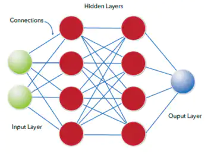

How
HowArtificial Intelligence Works

How It Works
AI works by combining large amounts of data with fast, iterative processing and intelligent algorithms, allowing the software to learn automatically from patterns or features in the data. AI is a broad field of study that includes many theories, methods and technologies, as well as the following major subfields:

Machine Learning
Machine learning is a method of data analysis that automates analytical model building. It is a branch of artificial intelligence based on the idea that systems can learn from data, identify patterns and make decisions with minimal human intervention.
The main difference with machine learning is that just like statistical models, the goal is to understand the structure of the data – fit theoretical distributions to the data that are well understood. So, with statistical models there is a theory behind the model that is mathematically proven, but this requires that data meets certain strong assumptions too. Machine learning has developed based on the ability to use computers to probe the data for structure, even if we do not have a theory of what that structure looks like. The test for a machine learning model is a validation error on new data, not a theoretical test that proves a null hypothesis. Because machine learning often uses an iterative approach to learn from data, the learning can be easily automated. Passes are run through the data until a robust pattern is found.
Evolution of machine learning
Because of new computing technologies, machine learning today is not like machine learning of the past. It was born from pattern recognition and the theory that computers can learn without being programmed to perform specific tasks; researchers interested in artificial intelligence wanted to see if computers could learn from data. The iterative aspect of machine learning is important because as models are exposed to new data, they are able to independently adapt. They learn from previous computations to produce reliable, repeatable decisions and results. It’s a science that’s not new – but one that has gained fresh momentum.
Machine
Learning
Neural Networks
Neural networks are computing systems with interconnected nodes that work much like neurons in the human brain. Using algorithms, they can recognize hidden patterns and correlations in raw data, cluster and classify it, and – over time – continuously learn and improve.
Neural networks are also ideally suited to help people solve complex problems in real-life situations. They can learn and model the relationships between inputs and outputs that are nonlinear and complex; make generalizations and inferences; reveal hidden relationships, patterns and predictions; and model highly volatile data (such as financial time series data) and variances needed to predict rare events (such as fraud detection).

Types of Neural Networks
- Convolutional neural networks (CNNs) contain five types of layers: input, convolution, pooling, fully connected and output. Each layer has a specific purpose, like summarizing, connecting or activating. Convolutional neural networks have popularized image classification and object detection. However, CNNs have also been applied to other areas, such as natural language processing and forecasting.
- Recurrent neural networks (RNNs) use sequential information such as time-stamped data from a sensor device or a spoken sentence, composed of a sequence of terms. Unlike traditional neural networks, all inputs to a recurrent neural network are not independent of each other, and the output for each element depends on the computations of its preceding elements. RNNs are used in forecasting and time series applications, sentiment analysis and other text applications.
- Feedforward neural networks, in which each perceptron in one layer is connected to every perceptron from the next layer. Information is fed forward from one layer to the next in the forward direction only. There are no feedback loops.
- Autoencoder neural networks are used to create abstractions called encoders, created from a given set of inputs. Although similar to more traditional neural networks, autoencoders seek to model the inputs themselves, and therefore the method is considered unsupervised. The premise of autoencoders is to desensitize the irrelevant and sensitize the relevant. As layers are added, further abstractions are formulated at higher layers (layers closest to the point at which a decoder layer is introduced). These abstractions can then be used by linear or nonlinear classifiers.
Deep Learning
Deep learning is a subset of machine learning that trains a computer to perform human-like tasks, such as speech recognition, image identification and prediction making. It improves the ability to classify, recognize, detect and describe using data. The current interest in deep learning is due, in part, to the buzz surrounding artificial intelligence (AI).
Deep learning changes how you think about representing the problems that you’re solving. With deep learning, data trains the computer, through deep algorithms, to learn on its own by recognizing patterns using layers of processing. If you’re someone who’s never heard of deep learning, you may be wondering how all this works.

Future of Technology
Concepts . Human Robot . Terms & Conditions . Privacy Policy
Follow Us on
COPYRIGHT © 2021 HARDIK PATIL | POWERED BY HARDIK PATIL ®